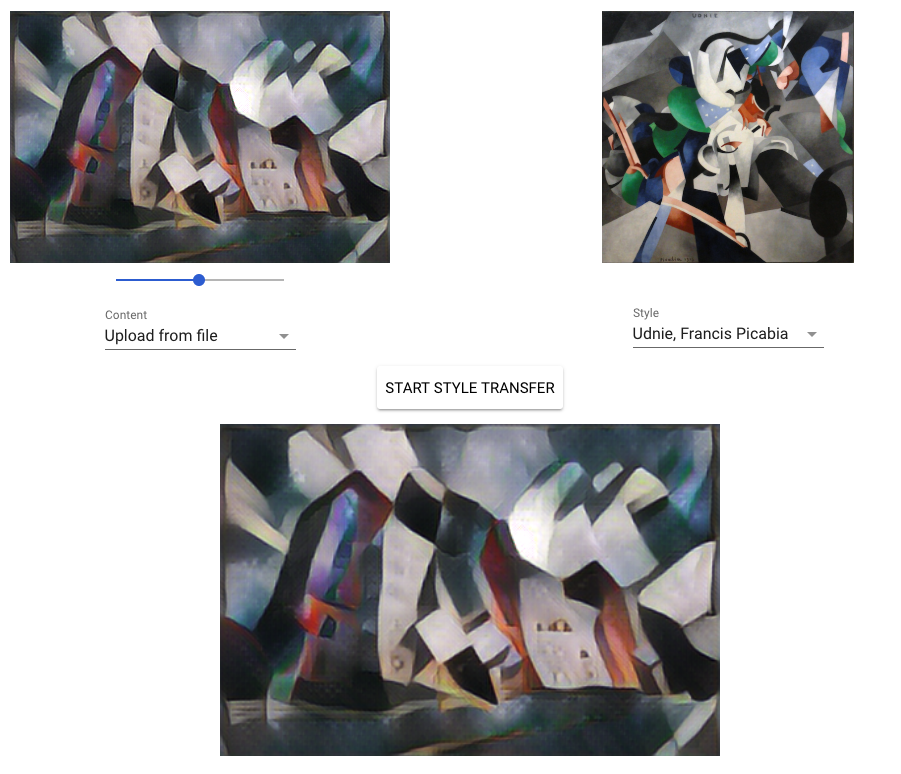

ASSIGNMENT 3
1.4: Visualizing convolutional neural networks
Interesting observations about the results from using the demo.
By playing with the tool in an ipad pro, I can see that it performs really well even when I try to cheat the program by drawing numbers in a imprecise way. Almost every time it guessed the number correctly. Because images are not complex and in general only B/W pixels compose the image, I guees that capturing the spatial patterns in data is far more easy for this CNN than working with more complex datasets.
3.5 Fast style transfer
1. What happens when you pass an image through the same filter several times? Do you observe any interesting characteristics or padding artifacts?
it is interesting how, by repeating the procedure of style transfer on the same image with the same filter, it looses not resolution but definition. By repeating the procedure it produces a 'blur' effect in details. In this case, by using the stata center, it is clear how some architectural details still visible in the first applciation of the style transfer, are blurred and tottaly dissapear in a third iteration.

2. Apply a filter to an image and then apply another filter to that already-filtered image. Is the result similar to what you would get when you apply the second filter to the original image?
The results are similar. Nevertheless, the same thing that happened with the previous test. the image loose some details and structure after the application of the first filter . It shows some artifacts after applying some styles to the processed image.

3. Try different combinations of filters and number of times you filter an image. Note on your website if you have any interesting observations or insights.
in the second of the previous image, it is possible to see that after applying different filters to the same image it looses some of the key feratures and stsart showing some noticeable artifacts.

1- try changing the learning rate, batch size and number of batches. make sure that these numbers are reasonable to start
The system performs really bad and can't get more than 40 % after playing with some parameters such as the batch size and the test batch size. Here I tried increasing the batch size to high numbers (from 64 to 1024), stressing my computer but getting results much faster and more accuracy over time. The problem is that the computer got really slow and crashed after a while (using almost all my 32 gb of ram).

2. Try changing some of the other parameters like field size, stride, output, …
changing other parameters, made some small differences in the learning accuracy. it was faster when I increased the filters and tuned some parameters such as the strides. Still hard to tell if it made some major changes in performance.


My guess is that training images with more "information" -in this case color- makes the search for spatial pattern matching much more difficult needing more layers and 'fine tunning tricks' to manage in an efficient way the training. Reading papers that achieved a better performance https://arxiv.org/pdf/1412.6806.pdf or https://arxiv.org/abs/1511.06422 expose different techniques to get over 90% of accuracy such as replacing maxpooling with another convolution layer with increased stride.
4. How does adding more convolutional layers relate to accuracy and training speed? Is there a point at which adding more layers plateaus or even decreases the maximum accuracy you are able to achieve with that model?
In my case it doesn't and for some reason I had many problems trying to debug my code because of errors I couln't solve that using python didn't happen.
5. Challenge: Are you able to find an architecture/combination of techniques that can get you to 60% accuracy on CIFAR-10 within 1 minute of training? 5 minutes? 10 minutes?
No, using my code and playing with parameters I only got 60% accuracy running my model all night long on my desktop pc. Increasing the batch size to high numbers such as 1024 stressed the computer but in the end gave me better results with my code.
CODE